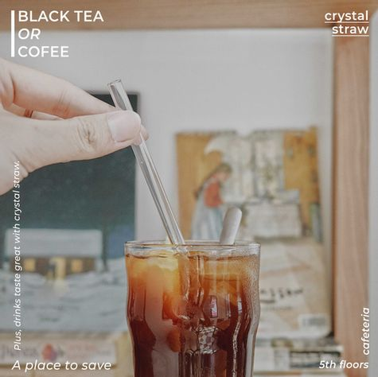
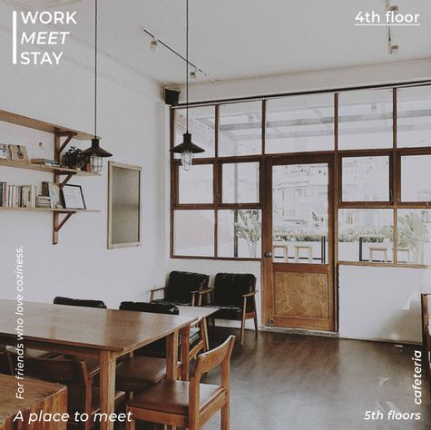
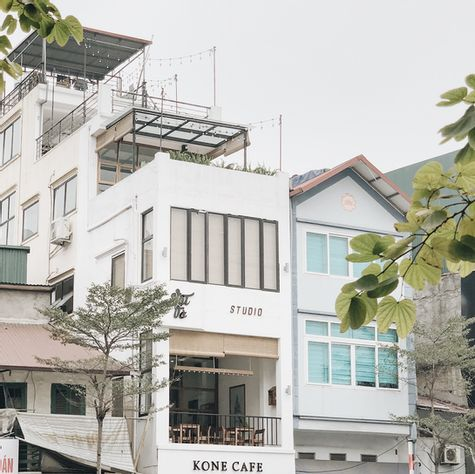
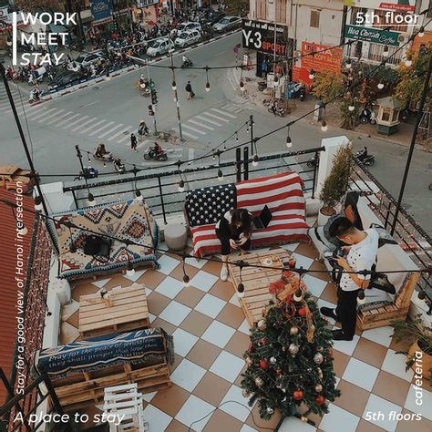
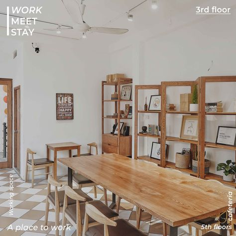

Chốn nhẹ nhàng giữa lòng Hà Nội
- 
- 
- 
- 
- 
Chậm lại khác biệt với ngã năm Khâm Thiên - Xã Đàn ngoài kia ồn ã, Kone Cafe chậm rãi, yên tĩnh hơn với những góc trắng không gian.
Khoác lên mình sắc trắng tinh khôi và màu vàng nâu mật ong ấm áp của gỗ, cách bài trí tối giản, Kone Cafe có nhiều góc không gian mở với cửa kính và ban công rộng. Ở dây, bạn có thể dễ dàng tìm được một ví trí ngồi, nơi mà những tia nắng đang xiên qua ô cửa, trải nhẹ lên góc ban công và ngắm nhìn xuống phố phường đông đúc.
Với những món đồ uống đặc trưng như ly trà đen thơm ngon, những tách cafe nóng hổi, hoà quyện cùng không gian nhẹ nhàng và đội ngũ nhân viên thân thiện, Kone Cafe luôn muốn đem lại cho những bạn ghé thăm một cảm giác thoải mái và nhẹ nhàng nhất, một nơi để ngồi lại làm việc, nơi của những cuộc gặp gỡ với bạn bè hay đơn giản chỉ là ngồi lại để sống chậm hơn.